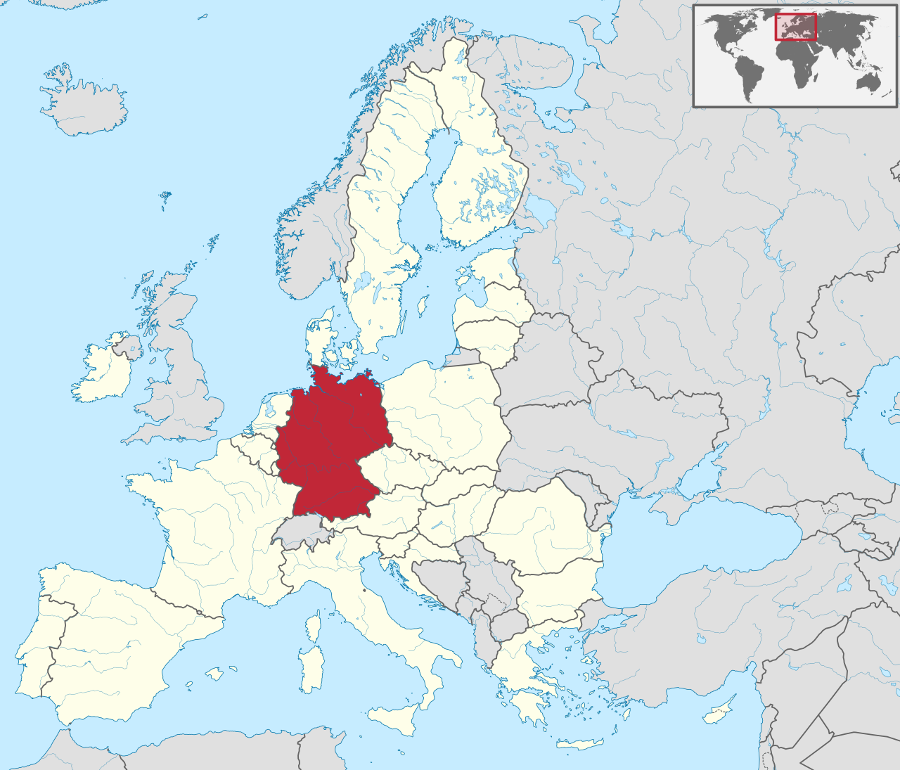

Informacje ogólne
Państwo federacyjne położone w zachodniej i środkowej Europie. Składa się z 16 krajów związkowych (landów), a jego stolicą i największym miastem jest Berlin. Państwo ma powierzchnię 357 578 km² i panuje w nim klimat umiarkowany. Z około 83 milionami mieszkańców jest najludniejszym państwem Unii Europejskiej. Stanowi czołowe pod względem gospodarczym i politycznym państwo Europy. Stanowi część strefy Schengen i strefy euro, jest członkiem ONZ, OECD, G7, G20.
Po 1945 roku Niemcy zostały podzielone przez zwycięskich w wojnie aliantów, w wyniku czego powstały dwa państwa: Niemiecka Republika Demokratyczna i Republika Federalna Niemiec. Ich zjednoczenie nastąpiło w 1990 roku. W roku 1957 Niemcy Zachodnie były jednym z członków założycieli wspólnot europejskich, przekształconych później w Unię Europejską. Niemiecka gospodarka stanowi jedną z największych na świecie. Niemcy mają także bogatą historię i dziedzictwo kulturowe.
| Głowa państwa | Język urzędowy | Liczba ludności | Religia dominująca | Szef rządu | |
|---|---|---|---|---|---|
| prezydent Niemiec Frank-Walter Steiner | niemiecki | 83 019 200 | katolicyzm (27,7%), protestantyzm (25,5%) | kanclerz federalna Angela Merkel |
